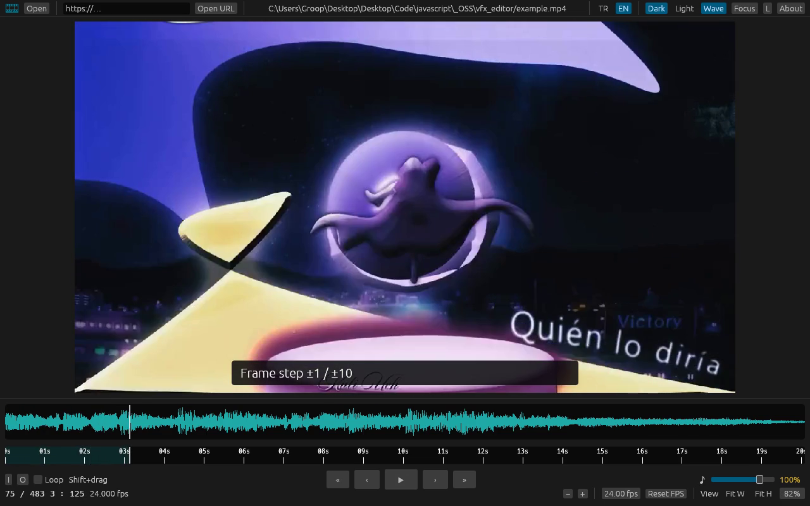
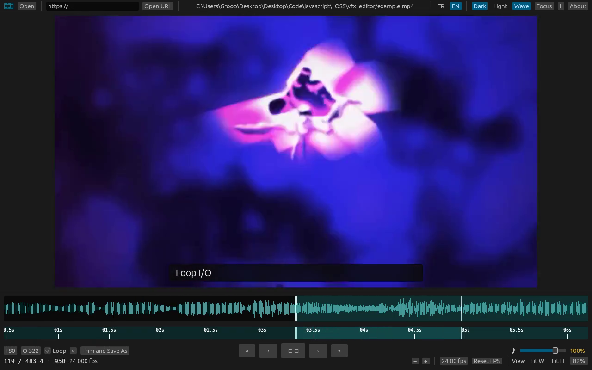
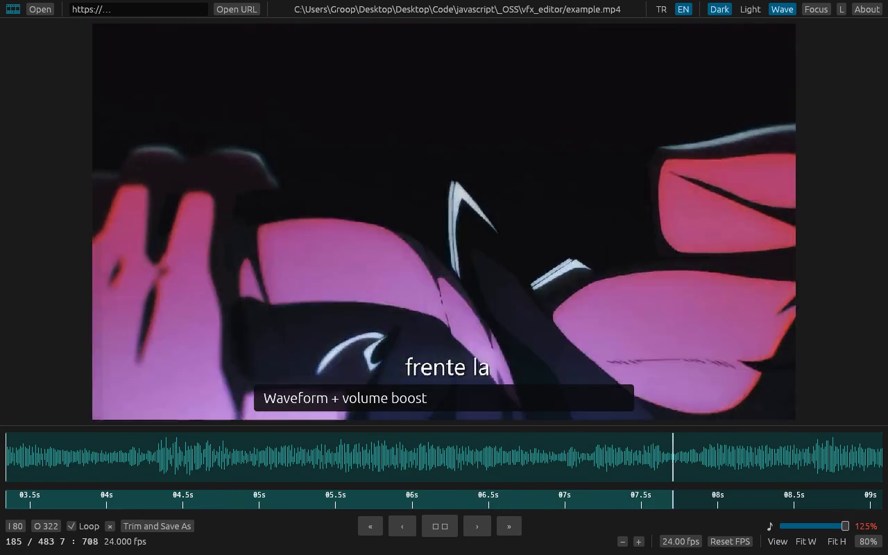
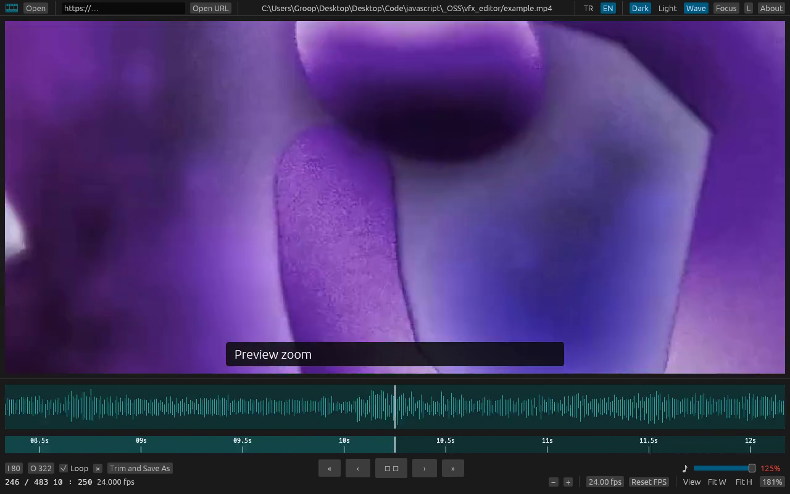

A player for VFX review.
VFX review için player.
Not frozen. Frame stepping looks still on purpose.
Donmuyor. Kare işlemleri gösterilirken öyle duruyor.

One frame or ten. You always know where you are. Time, frame, and playback speed on one bar.
Bir kare veya on. Zaman, kare ve hız aynı barda. Playhead’i tahmin etmezsin.

Set in and out, loop the range, trim and save in the same format. The note leaves with the clip.
Giriş ve çıkışı işaretle, aralığı döngüye al, aynı formatta kırp. Not, klibin yanında gider.

Waveform on the timeline. Turn the volume past 100% when the mix is too quiet to judge.
Timeline’da waveform. Mix kısıkssa sesi %100’ün üzerine çek, karar ver.

Zoom the preview, fit width or height, drag the waveform and ruler when the screen is tight.
Önizlemeyi büyüt, genişliğe veya yüksekliğe sığdır. Ekran darınca dalga ve cetveli sürükle.
mp4 · mov · m4v · mkv · webm · avi · wmv · mpg · mpeg · m2ts · ts · vob · flv · 3gp · ogv · mxf
VFX Player is free. If it saves you time on review, a coffee helps keep it going.
VFX Player ücretsiz. Review’da zaman kazandırdıysa bir kahve işi yürüttürür.